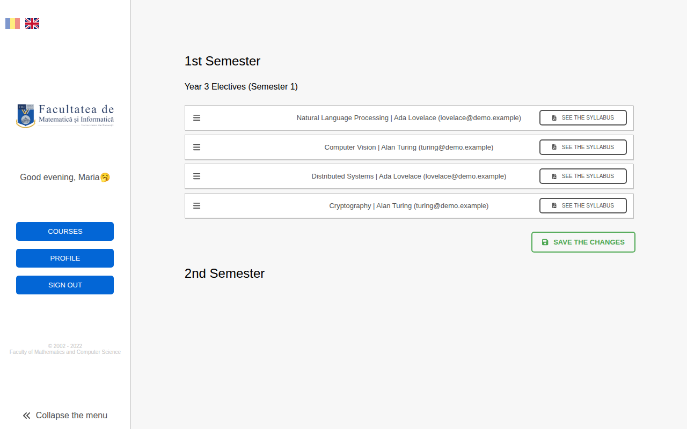
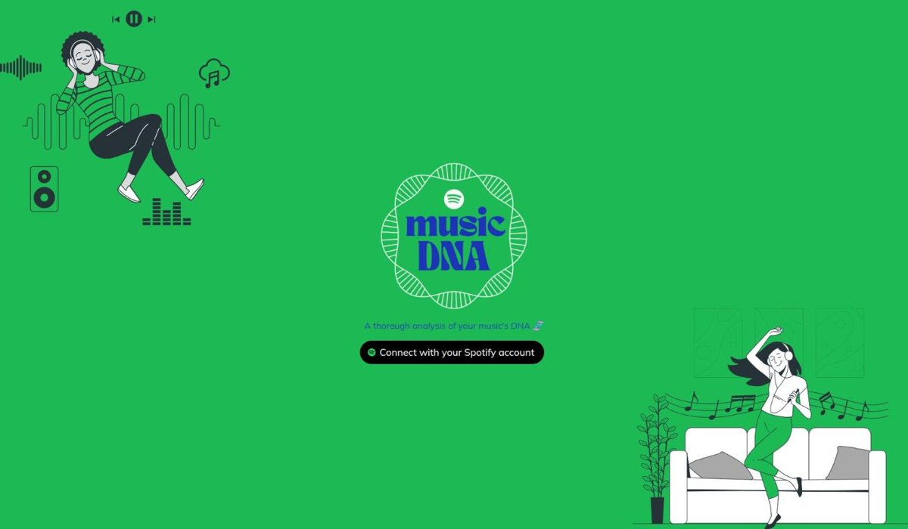

Software engineer at F-Secure in Helsinki, with a master's from
Aalto University (read my thesis) and a soft spot for speech technology. I like building things end to end, from signal processing to the web app on top.
Tells healthy voices apart from spasmodic dysphonia and recurrent laryngeal nerve palsy (Saarbrücken Voice Database), and studies how the MFCC-based classifier degrades under noise and room reverberation, and how multi-condition training helps.
ULISSES 2025. Where do plastic pellets go after a spill at sea? Drift simulations with OpenDrift and Copernicus
currents, winds and sea ice, presented on a mission-style website.
PythonOpenDriftReactTailwind

2022BSc thesis, University of BucharestBuilt without AI
Students rank their electives by drag and drop; when the session closes, seats are assigned
by grade. Admins import accounts from Excel and manage courses; teachers email their students.
Romanian and English interface. Supervised by Prof. Ioana Leuștean, then dean of the
Faculty of Mathematics and Computer Science.
Django RESTReactTypeScriptReduxChannels

2022ING {Dev}SchoolBuilt without AI
musicDNA
Connect your Spotify account and see your saved music broken down by genre; pick a genre to see your
own tracks in it next to recommended ones.
A team of three; I built the frontend: the pages, login flow and client-side state. May 2022.
Flights, airports, airlines, staff and shops, with reports on departures and employees. The interface is built with Vaadin, a framework for writing web UIs entirely in Java.
The website of the Rural Women National Association, a Romanian nonprofit I volunteered with
for four years: projects, activities, gallery and news. I built it with Gatsby, a React-based framework for fast static websites, and designed the logo.
An Android style quiz: pick six clothing items and find out whether your style is bohemian,
casual, chic or vintage. Made for my high-school Computer Science certification exam.
An Android app about remarkable women from each team member's country, built by a team of
Google Developer Challenge scholars and featured on the Udacity blog.